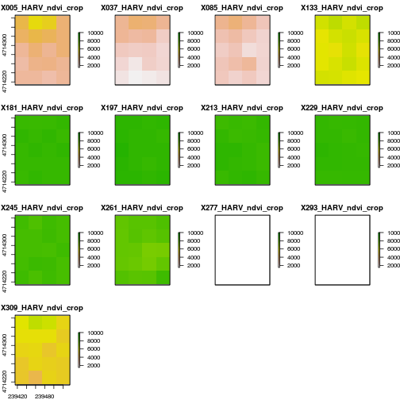

Raster Time Series Data in R
Authors
Leah A. Wasser, Megan A. Jones, Zack Brym, Kristina Riemer, Jason Williams, Jeff Hollister, Mike Smorul, Joseph Stachelek
Overview
Teaching: 10 min
Exercises: 0 minQuestions
Understand the format of a time series raster dataset.
Know how to work with time series rasters.
Be able to efficiently import a set of rasters stored in a single directory.
Be able to plot and explore time series raster data using the
plot()function inR.
Things You’ll Need To Complete This Tutorial
R Skill Level: Intermediate - you’ve got the basics of
Rdown. You will need the most current version ofRand, preferably,RStudioloaded on your computer to complete this tutorial.Install R Packages
- raster:
install.packages("raster")rgdal:
install.packages("rgdal")- More on Packages in R - Adapted from Software Carpentry.
Data to Download
Additional Resources
This tutorial covers how to work with and plot a raster time series, using an
R RasterStack object. It also covers practical assessment of data quality in
remote sensing derived imagery.
About Raster Time Series Data
A raster data file can contain one single band or many bands. If the raster data contains imagery data, each band may represent reflectance for a different wavelength (color or type of light) or set of wavelengths - for example red, green and blue. A multi-band raster may two or more bands or layers of data collected at different times for the same extent (region) and of the same resolution.

The raster data that we will use in this tutorial are located in the
(NEON-DS-Landsat-NDVI\HARV\2011\NDVI) directory and cover part of the
NEON Harvard Forest field site.
In this tutorial, we will:
- Import NDVI data in
GeoTIFFformat. - Import, explore and plot NDVI data derived for several dates throughout the year.
- View the RGB imagery used to derived the NDVI time series to better understand unusual / outlier values.
NDVI Data
The Normalized Difference Vegetation Index or NDVI is a quantitative index of greenness ranging from 0-1 where 0 represents minimal or no greenness and 1 represents maximum greenness.
NDVI is often used for a quantative proxy measure of vegetation health, cover and phenology (life cycle stage) over large areas. Our NDVI data is a Landsat derived single band product saved as a GeoTIFF for different times of the year.

RGB Data
While the NDVI data is a single band product, the RGB images that contain the red band used to derive NDVI, contain 3 (of the 7) 30m resolution bands available from Landsat data. The RGB directory contains RGB images for each time period that NDVI is available.

Getting Started
In this tutorial, we will use the raster and rgdal libraries.
# load packages
library(raster)
Loading required package: sp
library(rgdal)
rgdal: version: 1.2-8, (SVN revision 663)
Geospatial Data Abstraction Library extensions to R successfully loaded
Loaded GDAL runtime: GDAL 2.2.1, released 2017/06/23
Path to GDAL shared files: /usr/share/gdal/2.2
Loaded PROJ.4 runtime: Rel. 4.9.2, 08 September 2015, [PJ_VERSION: 492]
Path to PROJ.4 shared files: (autodetected)
Linking to sp version: 1.2-5
To begin, we will create a list of raster files using the list.files()
function in R. This list will be used to generate a RasterStack. We will
only add files to our list with a .tif extension using the syntax
pattern=".tif$".
If we specify full.names=TRUE, the full path for each file will be added to
the list.
# Create list of NDVI file paths
# assign path to object = cleaner code
NDVI_HARV_path <- "data/NEON-DS-Landsat-NDVI/HARV/2011/NDVI"
all_NDVI_HARV <- list.files(NDVI_HARV_path,
full.names = TRUE,
pattern = ".tif$")
# view list - note the full path, relative to our working directory, is included
all_NDVI_HARV
[1] "data/NEON-DS-Landsat-NDVI/HARV/2011/NDVI/005_HARV_ndvi_crop.tif"
[2] "data/NEON-DS-Landsat-NDVI/HARV/2011/NDVI/037_HARV_ndvi_crop.tif"
[3] "data/NEON-DS-Landsat-NDVI/HARV/2011/NDVI/085_HARV_ndvi_crop.tif"
[4] "data/NEON-DS-Landsat-NDVI/HARV/2011/NDVI/133_HARV_ndvi_crop.tif"
[5] "data/NEON-DS-Landsat-NDVI/HARV/2011/NDVI/181_HARV_ndvi_crop.tif"
[6] "data/NEON-DS-Landsat-NDVI/HARV/2011/NDVI/197_HARV_ndvi_crop.tif"
[7] "data/NEON-DS-Landsat-NDVI/HARV/2011/NDVI/213_HARV_ndvi_crop.tif"
[8] "data/NEON-DS-Landsat-NDVI/HARV/2011/NDVI/229_HARV_ndvi_crop.tif"
[9] "data/NEON-DS-Landsat-NDVI/HARV/2011/NDVI/245_HARV_ndvi_crop.tif"
[10] "data/NEON-DS-Landsat-NDVI/HARV/2011/NDVI/261_HARV_ndvi_crop.tif"
[11] "data/NEON-DS-Landsat-NDVI/HARV/2011/NDVI/277_HARV_ndvi_crop.tif"
[12] "data/NEON-DS-Landsat-NDVI/HARV/2011/NDVI/293_HARV_ndvi_crop.tif"
[13] "data/NEON-DS-Landsat-NDVI/HARV/2011/NDVI/309_HARV_ndvi_crop.tif"
Now we have a list of all GeoTIFF files in the NDVI directory for Harvard
Forest. Next, we will create a RasterStack from this list using the stack()
function.
# Create a raster stack of the NDVI time series
NDVI_HARV_stack <- stack(all_NDVI_HARV)
We can explore the GeoTIFF tags (the embedded metadata) in a stack using the
same syntax that we used on single-band raster objects in R including: crs()
(coordinate reference system), extent() and res() (resolution; specifically
yres() and xres()).
# view crs of rasters
crs(NDVI_HARV_stack)
CRS arguments:
+proj=utm +zone=19 +ellps=WGS84 +units=m +no_defs
# view extent of rasters in stack
extent(NDVI_HARV_stack)
class : Extent
xmin : 239415
xmax : 239535
ymin : 4714215
ymax : 4714365
# view the y resolution of our rasters
yres(NDVI_HARV_stack)
[1] 30
# view the x resolution of our rasters
xres(NDVI_HARV_stack)
[1] 30
Notice that the CRS is +proj=utm +zone=19 +ellps=WGS84 +units=m +no_defs. The
CRS is in UTM Zone 19. If you have completed the previous tutorials in
this
raster data in R series ,
you may have noticed that the UTM zone for the NEON collected remote sensing
data was in Zone 18 rather than Zone 19. Why are the Landsat data in Zone 19?

The width of a Landsat scene is extremely wide - spanning over 170km north to
south and 180km east to west. This means that Landsat data often cover multiple
UTM zones. When the data are processed, the zone in which the majority of the
data cover, is the zone which is used for the final CRS. Thus, our field site at
Harvard Forest is located in UTM Zone 18, but the Landsat data is in a CRS of
UTM Zone 19.
Challenge: Raster Metadata
Answer the following questions about our
RasterStack.
- What is the CRS?
- What is the x and y resolution of the data?
- What units is the above resolution in?
Answers
# 1. UTM zone 19 WGS 84 # 2. 30x30 meters # 3. meters
Plotting Time Series Data
Once we have created our RasterStack, we can visualize our data. We can use
the plot() command to quickly plot a RasterStack.
# view a plot of all of the rasters
# 'nc' specifies number of columns (we will have 13 plots)
plot(NDVI_HARV_stack,
zlim = c(1500, 10000),
nc = 4)

Have a look at the range of NDVI values observed in the plot above. We know that the accepted values for NDVI range from 0-1. Why does our data range from 0 - 10,000?
Scale Factors
The metadata for this NDVI data specifies a scale factor: 10,000. A scale factor is sometimes used to maintain smaller file sizes by removing decimal places. Storing data in integer format keeps files sizes smaller.
Let’s apply the scale factor before we go any further. Conveniently, we can quickly apply this factor using raster math on the entire stack as follows:
raster_stack_object_name / 10000
Data Tip
We can make this plot even prettier by fixing the individual tile names, adding an plot title and by using the (
levelplot) function. This is covered in the NEON Data Skills Plot Time Series Rasters in R tutorial.
# apply scale factor to data
NDVI_HARV_stack <- NDVI_HARV_stack/10000
# plot stack with scale factor applied
# apply scale factor to limits to ensure uniform plottin
plot(NDVI_HARV_stack,
zlim = c(.15, 1),
nc = 4)
Take a Closer Look at Our Data
Let’s take a closer look at the plots of our data. Note that Massachusettes, where the NEON Harvard Forest Field Site is located has a fairly consistent fall, winter, spring and summer season where vegetation turns green in the spring, continues to grow throughout the summer, and begins to change colors and senesce in the fall through winter. Do you notice anything that seems unusual about the patterns of greening and browning observed in the plots above?
Hint: the number after the “X” in each tile title is the Julian day which in this case represents the number of days into each year. If you are unfamiliar with Julian day, check out the NEON Data Skills Converting to Julian Day tutorial.
View Distribution of Raster Values
In the above exercise, we viewed plots of our NDVI time series and noticed a few images seem to be unusually light. However this was only a visual representation of potential issues in our data. What is another way we can look at these data that is quantitative?
Next we will use histograms to explore the distribution of NDVI values stored in each raster.
# create histograms of each raster
hist(NDVI_HARV_stack,
xlim = c(0, 1))
It seems like things get green in the spring and summer like we expect, but the data at Julian days 277 and 293 are unusual. It appears as if the vegetation got green in the spring, but then died back only to get green again towards the end of the year. Is this right?
Explore Unusual Data Patterns
The NDVI data that we are using comes from 2011, perhaps a strong freeze around Julian day 277 could cause a vegetation to senesce early, however in the eastern United States, it seems unusual that it would proceed to green up again shortly thereafter.
Let’s next view some temperature data for our field site to see whether there were some unusual fluctuations that may explain this pattern of greening and browning seen in the NDVI data.
There are no significant peaks or dips in the temperature during the late summer or early fall time period that might account for patterns seen in the NDVI data.
What is our next step?
Let’s have a look at the source Landsat imagery that was partially used used to derive our NDVI rasters to try to understand what appears to be outlier NDVI values.
Challenge: Examine RGB Raster Files
- View the imagery located in the
/NEON-DS-Landsat-NDVI/HARV/2011directory.- Plot the RGB images for the Julian days 277 and 293 then plot and compare those images to jdays 133 and 197.
- Does the RGB imagery from these two days explain the low NDVI values observed on these days?
HINT: if you want to plot 4 images in a tiled set, you can use
par(mfrow=c(2, 2))to create a 2x2 tiled layout. When you are done, be sure to reset your layout using:par(mfrow=c(1, 1)).Answers
# reset layout par(mfrow=c(2,2)) # open up file for Jday 277 RGB_277 <- stack("data/NEON-DS-Landsat-NDVI/HARV/2011/RGB/277_HARV_landRGB.tif") plotRGB(RGB_277) # open up file for jday 293 RGB_293 <- stack("data/NEON-DS-Landsat-NDVI/HARV/2011/RGB/293_HARV_landRGB.tif") plotRGB(RGB_293) # view a few other images # open up file for jday 133 RGB_133 <- stack("data/NEON-DS-Landsat-NDVI/HARV/2011/RGB/133_HARV_landRGB.tif") plotRGB(RGB_133, stretch="lin") # open up file for jday 197 RGB_197 <- stack("data/NEON-DS-Landsat-NDVI/HARV/2011/RGB/197_HARV_landRGB.tif") plotRGB(RGB_197, stretch="lin") > > # create list of files to make raster stack # RGB_HARV_allCropped <- list.files("NEON-DS-Landsat-NDVI/HARV/2011/RGB/", # full.names=TRUE, # pattern = ".tif$") # create a layout # par(mfrow=c(4, 4)) # Super efficient code - plot using a loop # for (aFile in RGB_HARV_allCropped){ # NDVI.rastStack <- stack(aFile) # plotRGB(NDVI.rastStack, stretch="lin") # } # reset layout par(mfrow=c(1, 1))Error: <text>:31:1: unexpected '>' 30: stretch="lin") 31: > ^
Explore The Data’s Source
The third challenge question, “Does the RGB imagery from these two days explain the low NDVI values observed on these days?” highlights the importance of exploring the source of a derived data product. In this case, the NDVI data product was derived from (created using) Landsat imagery - specifically the red and near-infrared bands.
When we look at the RGB collected at Julian days 277 and 293 we see that most of the image is filled with clouds. The very low NDVI values resulted from cloud cover — a common challenge that we encounter when working with satellite remote sensing imagery.
Key Points